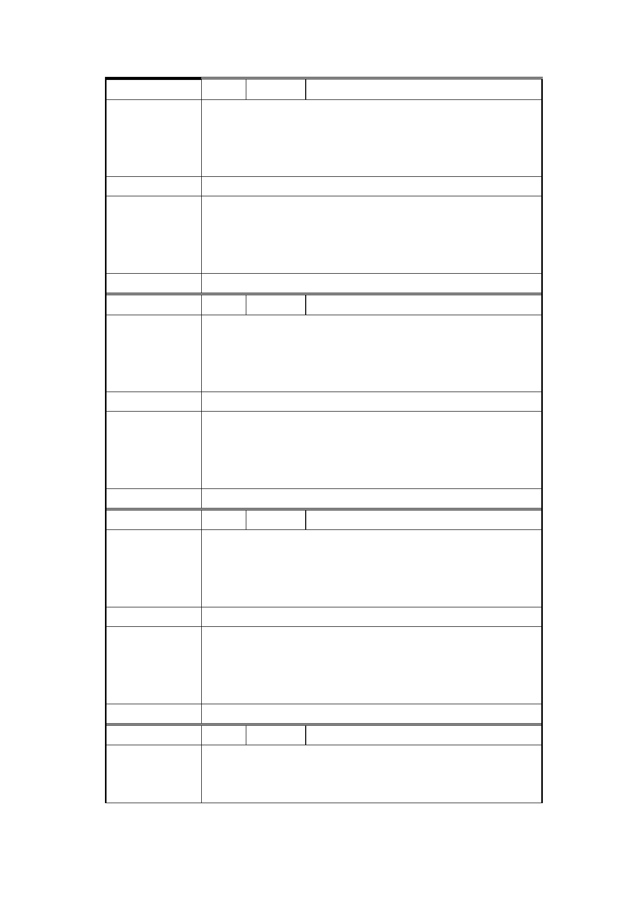

編 號 4 陳情人 葉○杰、趙○華、葉○奇
一、土地標示：大同區橋北段三小段 599、599-1
陳情理由
地號
二、門牌號：民權西路 245 巷 1 號
三、反對聯合開發
建 議 辦 法 回復原都市計畫使用分區
本計畫案係回復原都市計畫使用分區之都市計畫變
市 府 回 應 更案，後續須提送本市都市計畫委員會審議，主要
說 明 計畫案須報請內政部核定，俟內政部核定後，據以
發布實施。
委 員 會 決 議 同「市府回應說明」。
編 號 5 陳情人 李○義、林○貝
一、土地標示：大同區橋北段三小段 586、586-1
陳情理由
地號
二、門牌號：延平北路 3 段 8 號
三、反對聯合開發
建 議 辦 法 盡速歸還原分區使用
本計畫案係回復原都市計畫使用分區之都市計畫變
市 府 回 應 更案，後續須提送本市都市計畫委員會審議，主要
說 明 計畫案須報請內政部核定，俟內政部核定後，據以
發布實施。
委 員 會 決 議 同「市府回應說明」。
編 號 6 陳情人 李○錕
一、土地標示：大同區橋北段三小段 584、620、
陳情理由
620-1、629 地號
二、門牌號：延平北路三段 12 號
三、堅決反對聯開
建 議 辦 法 儘速回復原都市計畫使用分區
本計畫案係回復原都市計畫使用分區之都市計畫變
市 府 回 應 更案，後續須提送本市都市計畫委員會審議，主要
說 明 計畫案須報請內政部核定，俟內政部核定後，據以
發布實施。
委 員 會 決 議 同「市府回應說明」。
編 號 7 陳情人 黃○魁
一、 門牌號：台北市民權西路 245 巷 3 號
陳 情 理 由 二、 從開始的意見表，即資訊不透明與不對等。
三、 聯開後，分配對原地主並沒有較為有益。
第 20 頁 / 共 25 頁